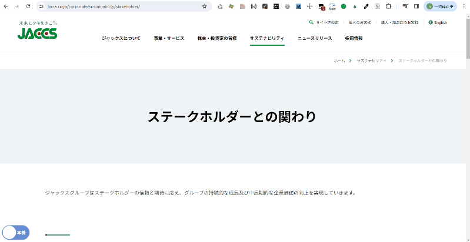
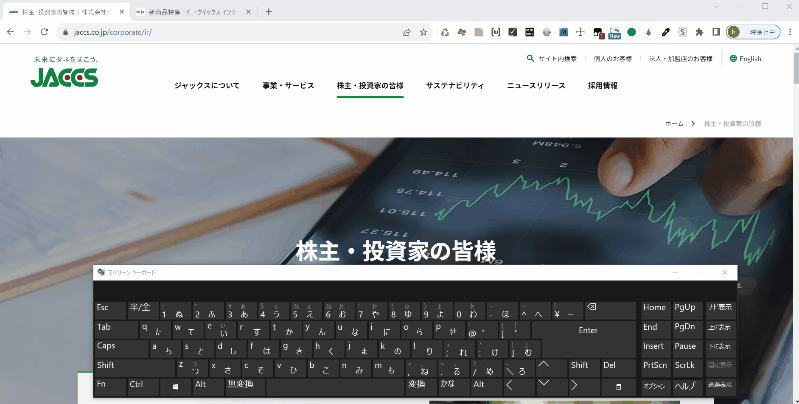

ユーザースクリプト一覧
個人的に開発したユーザースクリプトをまとめています。ツールに応じて適宜必要な設定を行いご利用ください。
-
※ユーザースクリプトの説明についてはここでは割愛します。詳しくは、UserScript（ユーザースクリプト）の概要と使い方などをご参照ください。
-
ドメイン切り替えツール
表示ページのドメインを本番↔デモに相互に切り替えるためのボタントグルを表示するツールです。
- 表示ページがドメイン切り替え対象ページの場合、画面左下にドメインを切り替えられるボタントグルを常時表示します。
- 切り替えドメインは
domainGroupsにグループごとに設定し、1つのグループにつき2つのドメイン（本番・デモ）を必ず設定してください。 - 複数の切り替えドメイングループを設定可能です。（サンプルとして、eQixとジャックスのドメインを設定しています）
 -
ドメイン切り替えツール（複数ドメイン+新規タブ表示）
表示ページのドメインを異なるドメインに差し替えて新規タブで開くためのボタンメニューを表示するツールです。
利用シーン：現在表示中のページをデモ↔本番、デモ↔先方検証環境など様々なドメインで新規タブで開いて参照・比較したいときなどの使用を想定しています。
- 表示ページがドメイン切り替え対象ページの場合、画面左下にドメインを切り替えられるボタンメニューを常時表示します。
- 切り替えドメインは
domainButtonsにグループごとに設定し、1つのドメイングループにつき複数のドメインを設定可能です。（ボタンは設定したドメイン数だけ表示されます） - 表示中のドメインと同一のドメインボタンは非活性になります。
- 複数の切り替えドメイングループを設定可能です。（サンプルとして、eQixとジャックスのドメインを設定しています）
-
ドメイン切り替えツール（キーボード操作）
特定のドメインを含むWebページに訪れた際に、数字キーをクリックすると表示中のページを異なるドメインに切り替えるツールです。
利用シーン：ドメイン切り替えツールをメニュー非表示の状態で使用したい場合を想定しています。
- 新規タブではなく同一タブで切り替わります。
- 切り替えられるドメインはグループごとに設定し、1つのドメイングループにつき最大9個のドメインを数字キー（1~9）に割り当てることが可能です。
- 複数の切り替えドメイングループを設定可能です。（サンプルとして、eQixとジャックスのドメインを設定しています）
-
※切り替えの際に数字キーを使用するため、他にページ内で同ボタンへの入力やショートカットを割り当てている場合は注意してください。
